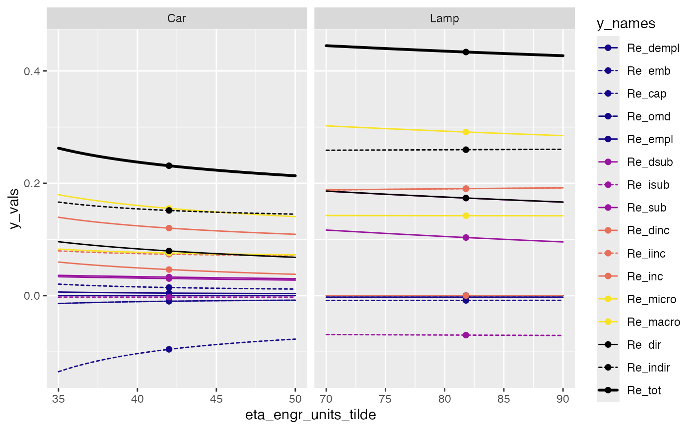

rebound_terms_graph.RdCreate a sensitivity graph with lines for all rebound terms.
rebound_terms_graph(
.parametric_data = parametric_analysis(rebound_data, parameterization),
rebound_data,
parameterization,
x_var,
Re_terms = unlist(ReboundTools::rebound_terms),
line_var = y_names_col,
y_names_col = ReboundTools::graph_df_colnames$y_names_col,
y_vals_col = ReboundTools::graph_df_colnames$y_vals_col,
graph_params = ReboundTools::sens_graph_params,
point_type_colname = ReboundTools::parametric_analysis_point_types$point_type_colname,
sweep_points = ReboundTools::parametric_analysis_point_types$sweep,
orig_points = ReboundTools::parametric_analysis_point_types$orig
)A data frame, likely the result of calling parametric_analysis().
Default is parametric_analysis(rebound_data, parameterization).
Rebound data, likely read by load_eeu_data().
Default is NULL.
A list of lists that gives parameter sweeps.
At the top level, the list items must be named for cases in rebound_data.
At the next level, the parameters to be swept should be given,
along with their sweep values.
See examples.
Default is NULL.
Strings that identify the x-axis and y-axis variables for this sensitivity graph.
These variables must appear in .parametric_data.
x_var must be a single string.
y_var can be a vector of strings.
See examples.
A string vector that tells which rebound terms to include in the graph.
Default is unlist(ReboundTools::rebound_terms).
The name of variable to be used to discriminate lines on the graph.
Default is y_names_col.
A list of parameters to control graph appearance.
See ReboundTools::sens_graph_params.
A ggplot2 graph showing sensitivity of all rebound terms to x_var.
This function has the same arguments as sensitivity_graphs(),
except that yvar is missing.
y_var is missing, because the ordinate is assumed to be rebound values,
and all rebound components are included.
df <- load_eeu_data()
sens_params <- list(Car = list(eta_engr_units_star = seq(35, 50, by = 0.5)),
Lamp = list(eta_engr_units_star = seq(70, 90, by = 5)))
rebound_terms_graph(rebound_data = df, parameterization = sens_params,
x_var = "eta_engr_units_tilde") +
ggplot2::facet_wrap(facets = "Case", scales = "free_x")
